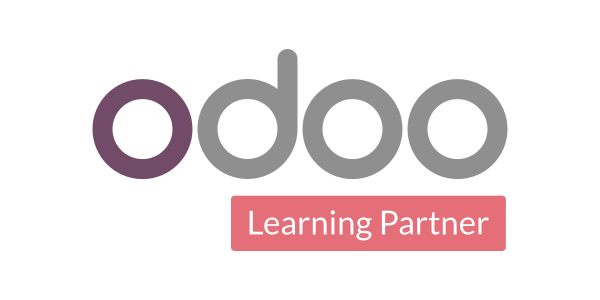
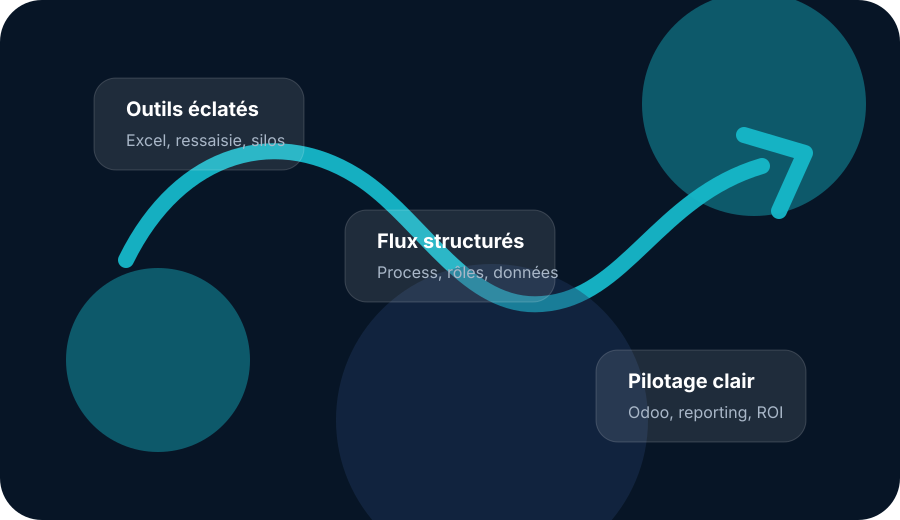

Effets silo
Les silos ne sont pas seulement humains : ils existent aussi entre les services, les fichiers, les outils et les données.
Conseil ERP · Digitalisation des flux · Odoo pour PE / PME
SMART Conseil & Performance accompagne les dirigeants de petites entreprises, PME, SEM et collectivités qui veulent sortir des routines Excel, des outils éparpillés, des doubles saisies et du pilotage à vue, pour construire une organisation plus claire, plus fluide et mieux pilotée autour d’un système d’information cohérent.

Bientôt ReadyLes signaux faibles qui coûtent cher
Les mêmes constats reviennent dans des entreprises de toute taille : effets silo, Excel qui compense, outils qui ne se parlent pas, données trop tardives et coûts invisibles. La vraie question n’est pas seulement de savoir si ça fonctionne aujourd’hui, mais si ces fragilités sont identifiées, documentées, priorisées et traitées.
Les silos ne sont pas seulement humains : ils existent aussi entre les services, les fichiers, les outils et les données.
Les utilisateurs trouvent toujours des solutions. Mais quand Excel remplace le système, il finit souvent par créer une dépendance.
Activité, rentabilité, stock, priorités, relances : les données existent, mais elles arrivent parfois trop tard pour décider.
Doubles saisies, lenteurs, contrôles manuels, erreurs et contournements absorbent du temps, de la marge et de l’énergie.
Méthode & savoir-faire
Le vrai sujet, c’est l’accompagnement : comprendre vos enjeux, challenger les usages, traduire le besoin en paramétrages utiles, embarquer les équipes et tenir le rythme. Un bon partenaire ne vend pas seulement des jours : il s’engage à vos côtés pendant la transition.
Avant de parler logiciel, on vous écoute : vos équipes, vos irritants, vos contournements, vos fichiers Excel et les habitudes qui tiennent l’activité.
On identifie ce qui circule mal, ce qui n’est pas documenté, ce qui repose sur quelques personnes et ce qui doit être priorisé.
On traduit les besoins en processus, rôles, règles de gestion, paramétrages et indicateurs réellement exploitables.
On avance par étapes, on impulse le rythme, on accompagne l’adoption et on garde le cap sur l’efficacité opérationnelle et le ROI.
Champs d’action
Choisir un nouvel ERP, c’est l’occasion de remettre à plat votre système de gestion et de casser les silos, notamment les silos logiciels. Avec Odoo, l’objectif n’est pas de tout faire en même temps, mais de construire progressivement un socle cohérent pour le commerce, la finance, les opérations, le terrain, les RH, le reporting et l’automatisation.
Structurer les flux métier autour d’un socle cohérent, progressif et réellement utilisé.
Fiabiliser le suivi des prospects, clients, opportunités, relances et priorités commerciales.
Rendre les données plus fiables, plus lisibles et plus utiles pour décider au bon moment.
Clarifier les rôles, les circuits internes, les validations et les usages quotidiens.
Donner aux équipes les bonnes informations, au bon endroit, au bon moment.
Automatiser ce qui peut l’être, sans perdre le contrôle métier ni la qualité de la donnée.
Diagnostic intelligent
Quelques clics suffisent pour obtenir un premier score, identifier les familles d’irritants et préparer une synthèse exploitable pour le premier échange.
L’objectif n’est pas de “faire un quiz”. Vos réponses permettent de voir ce que vous avez déjà identifié : silos, dépendance à Excel, ressaisies, manque de visibilité, besoin de changement d’ERP ou intégration Odoo à reprendre.
Vous obtenez une lecture simple, directement exploitable pour lancer la bonne discussion dès le premier échange.
Cochez vos irritants pour obtenir une première lecture.
Commencez par cocher les irritants qui ressemblent à votre quotidien.
Accompagnements
La V1 du site présente volontairement des portes d’entrée lisibles. Les périmètres sont ensuite adaptés à vos priorités.
Identifier les irritants, les doubles saisies, les fichiers critiques et les gains rapides à prioriser.
Transformer Odoo en socle opérationnel : CRM, ventes, achats, stock, projets, support, facturation et pilotage.
Construire une vision plus fiable de l’activité pour décider plus vite et mieux suivre les priorités.

Socle technologique
Odoo permet d’avancer progressivement sans empiler les outils. Chaque brique répond à un besoin, mais l’ensemble reste connecté dans une logique de plateforme, avec une vision commune des flux et des données.
Pour qui ?
Ici, on ne parle pas de théorie. On parle de situations concrètes, vécues au quotidien, quand l’information circule mal, quand les outils ne se parlent pas et quand le pilotage arrive trop tard.
Vous pilotez encore une partie de l’activité à coups de fichiers Excel, d’extractions et de tableaux parallèles.
Il vous faut parfois une demi-journée pour réconcilier les données et sortir une situation fiable.
Vous prenez encore des décisions à partir d’indicateurs qui ont parfois 1 à 3 mois de retard.
Vous devez faire travailler ensemble plusieurs équipes ou services qui avancent encore chacun de leur côté.
Vous vous demandez régulièrement où en sont les RDV clients, la pose, le SAV, les relances ou les priorités terrain.
Votre système d’information est devenu trop hétérogène pour offrir une lecture simple, fiable et exploitable de l’activité.
Qui suis-je ?
Je suis Alexandre Brihiez, dirigeant de SMART CONSEIL ET PERFORMANCE. Avant de parler logiciel, je vous écoute et je vous pose des questions.
Quand le contexte est clair, je peux commencer à être utile : clarifier la situation, fixer des objectifs, définir les étapes, impulser le rythme et accompagner l’avancement dans le temps.
Confiance
Partenariat Éditeur“Alexandre maîtrise ses sujets et allie exigence commerciale et expertise produit.”
Projet digital“Son expertise métier a été déterminante dans l’engagement du client.”
Projet CRM“Réactif, impliqué et doté d’un très bon relationnel dès le premier contact.”
Premier échange
Envoyez-moi quelques éléments sur votre organisation, vos flux ou votre système d’information. Le résultat du mini-diagnostic est automatiquement repris dans le message pour que l’échange soit utile dès les premières minutes.
Votre demande arrive directement à Alexandre. Pas de newsletter automatique, pas de données revendues.